Installing Nano Server on a Physical Machine using Windows Server 2016 Technical Preview 4
In this blog post we will look at how to deploy a Nano Server instance using Windows Server Technical Preview 4.
First of all there are two ways of deploying Nano Sever. First method is for deploying Nano Server on a VM and the Second method is for deploying Nano Server on a Physical machine. In this blog post, we will look at deploying Nano Server on a Physical machine.
Step 01 – Copy Nano Server creation Files
Create a folder to store Nano Server image
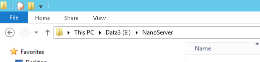
Download and mount Windows Server 2016 Technical Preview 4 Media and then copy following files in to your local hard drive (paste them in the folder which you created in the above step)
- Convert-WindowsImage
- NanoServerImageGenerator
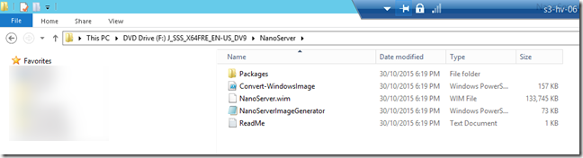
Step 02 – Create Nano Server Image
Run the following PowerShell Command to create the Nano Server Image. Open PowerShell as an Administrator and navigate to the folder which has above scripts copied.
First import Nano Server Image Generator module by running the following command
Import-Module .\NanoServerImageGenerator.psm1 –verbose
Next step is to run the image creation command
New-NanoServerImage -MediaPath f:\ -BasePath .\Base -TargetPath .\NanoServerHV03.vhd -ComputerName “S3-NN-01” -OEMDrivers -Compute -Storage -Defender -DomainName “nmt.com” -EnableRemoteManagementPort -Language EN-US
Note – Don’t forget to replace MediaPath, TargetPath, ComputerName, DomainName according to your environment. Language needs to be set to EN-US. If your Server supports for UEFI Boot, you could also name the target file with VHDX extension.
Provide local administrator password when prompted
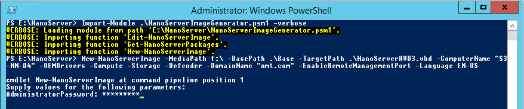
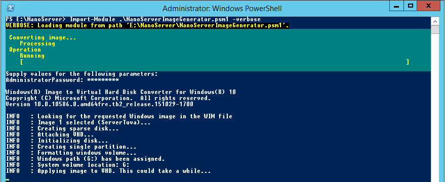
After about 15 minutes, this process should be completed. It could take longer due to injecting all OEM Drivers, which is an optional process. I didn’t have a driver pack for the server which i was building so I had to use the OEM driver pack which is a large OEM driver package which could take more time in building the image.
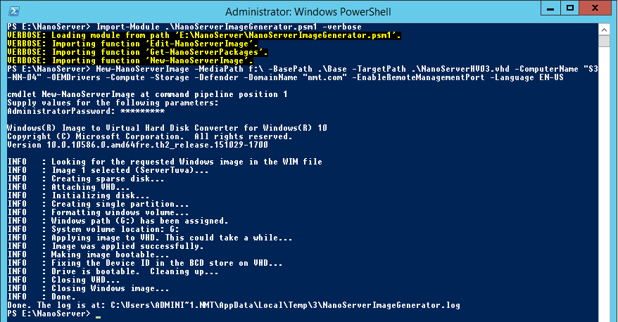
Verify that the image has been created on the designated folder.
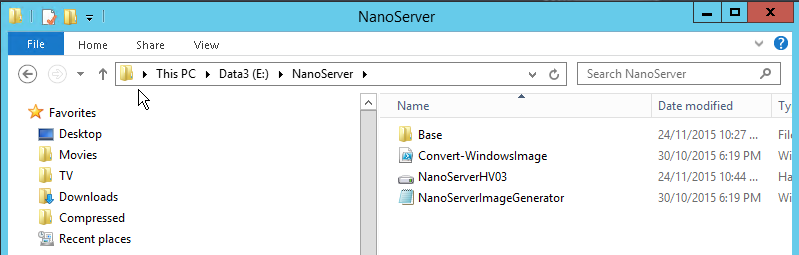
Step 03 – Create & Configure Boot Entry for booting Nano Server VHD
Open command prompt as an “Administrator” and run the following commands
bcdedit /copy {current} /d “Nano Server”
Make note of the Boot Entry GUID that gets created
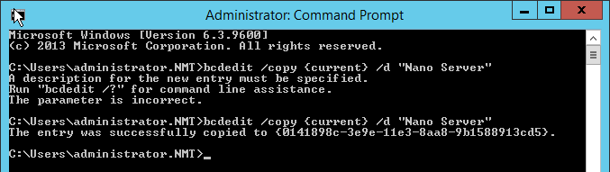
Next step is to run the following set of commands against the Nano Server boot entry which we just created. Replace Boot Entry GUID with your own, and also the location of the VHD/VHDX file.
- bcdedit /set {0141898c-3e9e-11e3-8aa8-9b1588913cd5} device vhd=[c:]\NanoServer\NanoServer.vhd
- bcdedit /set {0141898c-3e9e-11e3-8aa8-9b1588913cd5} osdevice vhd=[c:]\NanoServer\NanoServerHV03.vhd
- bcdedit /set {0141898c-3e9e-11e3-8aa8-9b1588913cd5} path \windows\system32\boot\winload.exe
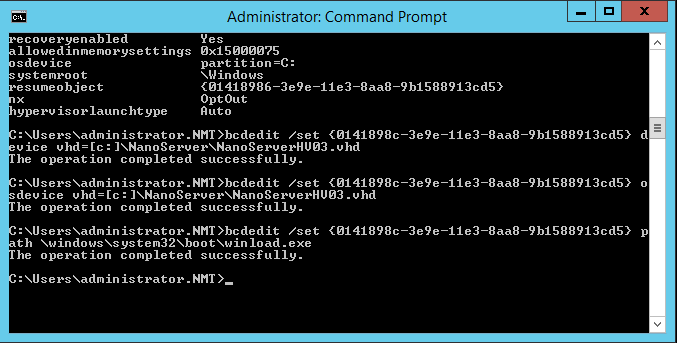
Next time when you restart your server, you will be prompted to select Nano Server Boot Option. If you need to we can also open System Configuration and set the Nano Server Boot record to be the default entry.
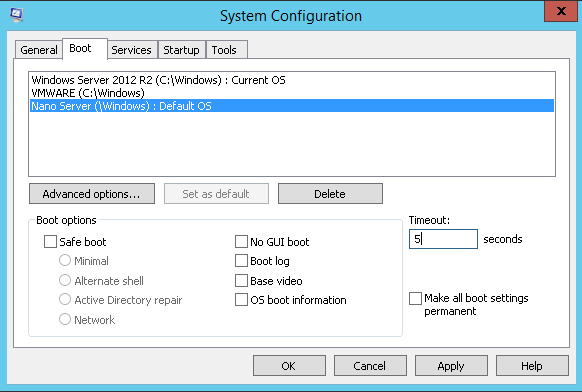
Based your boot records, you should see something similar when rebooting your server
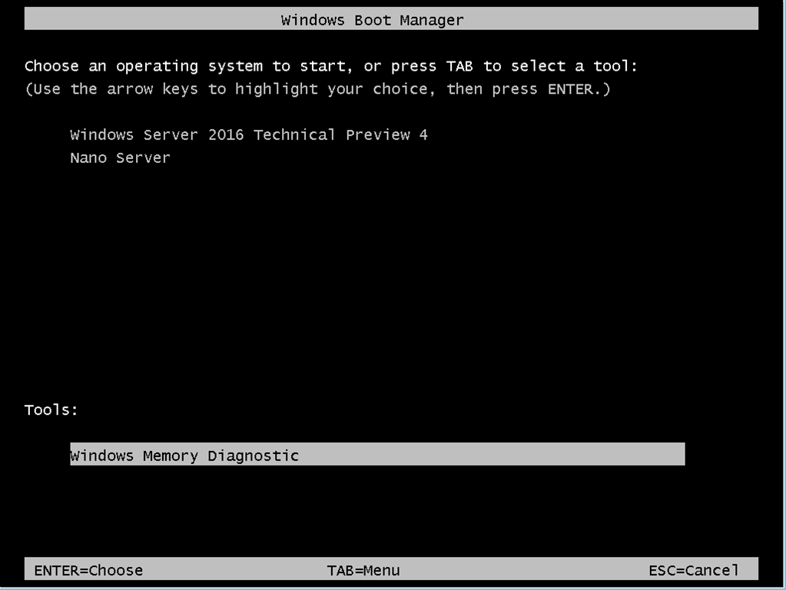
Provide credentials to login to Nano Server. If you have not specified -DomainName option when creating the Nano Server image, Nano Server will not get added to your domain and you will have to login using local administrator credentials. In my environment, i have added my Nano Server to my lab domain environment, and i can login using my domain Administrator Account
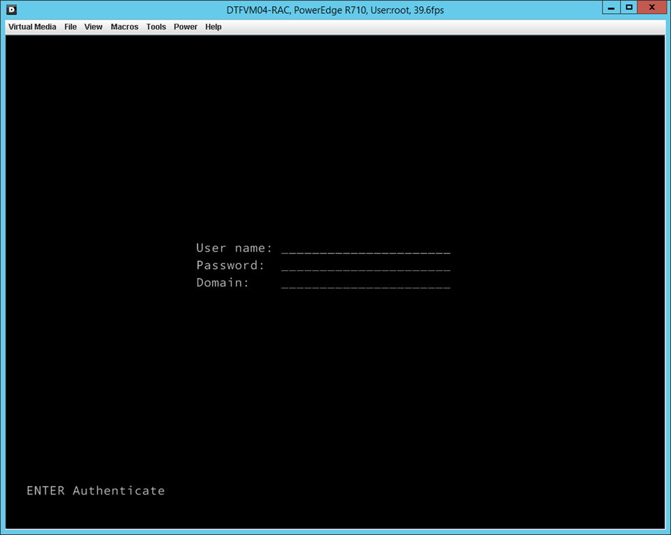
After logging in to Nano Server, you will be able to see Nano Server Recovery Console which has information relating to your Server and also allows you to configure Firewall rules and networking. Note that we don’t have an option to run PowerShell commands locally, and the Nano Server instance needs to be managed Remotely using PowerShell Remoting or using Server Manager.
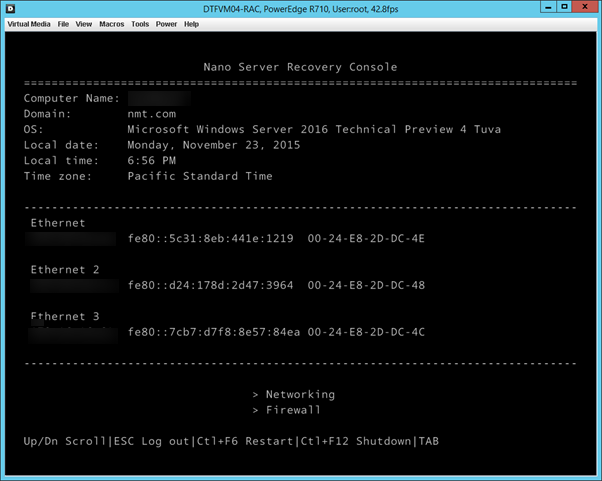
Step 04 – Connecting & Configuring Nano Server
Now that we have our Nano server up and running, lets have a look at some initial configuration that we can do on Nano Server. In order to do this, I’m going to open up Server Manager which is available on my local PC(Installed RSAT on my Windows 10 PC).
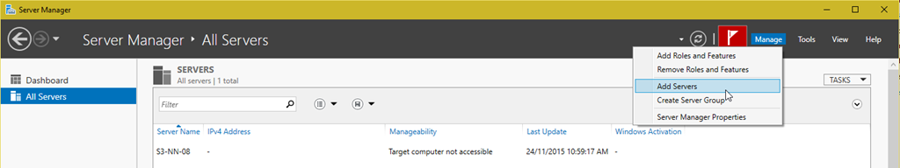
Add Nano Server Computers which are part of the Domain
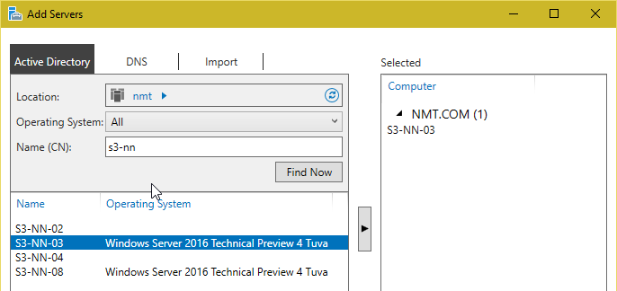
Now that the servers are added to Server Manager, these servers can be remotely managed
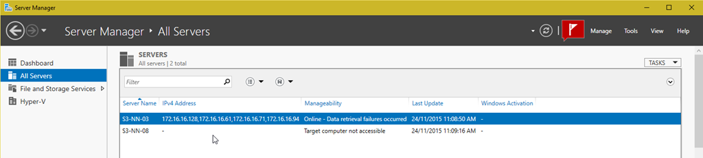
All my VMs are hosted in my D Drive which is created with Storage Spaces and also it has Deduplication enabled. Since I’m going to access my D Drive from Nano Server and import these VMs I need to make sure that I enable Deduplication on my Nano Server.
Click on Manager and select Add Roles and Features
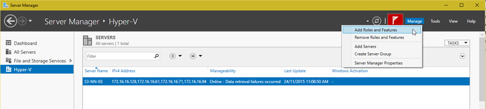
Select File and iSCSI Services and select File Server and Data Deduplication
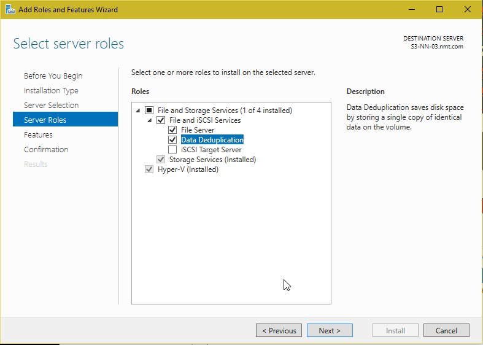
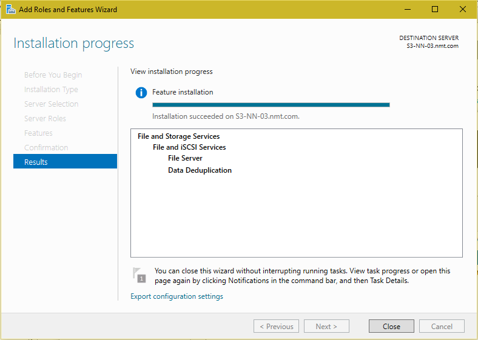
After finishing the installation, Open Hyper-V Manager by selecting the Server and then right-click open Hyper-V Manager
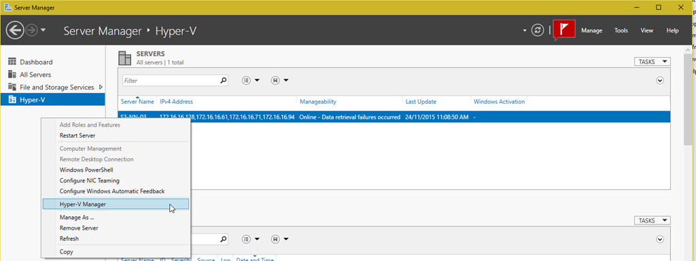
Now we can remotely manage our Nano Server instance and Import my existing Hyper-V VMs